Uma carta para você.
Para abri-la, permita o acesso à câmera e passe sua mão da esquerda para a direita diante dela.
Feliz Aniversário
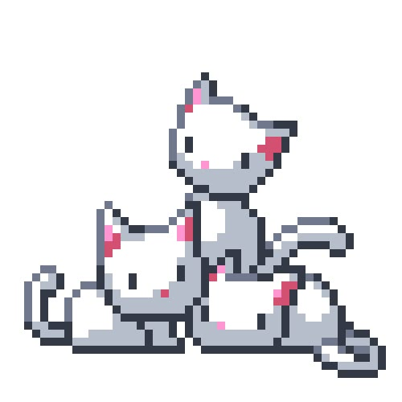
Como de costume, cá estou eu reclamando de como as coisas não saem como planejado. Nesse exato momento, essa carta virtual deveria possuir vários gatinhos com animações em loops, PixelArt's naquele estilo kawaiicore que você gosta tanto. Infelizmente, ainda sou um verdadeiro jumento em programação, e a dependência extrema das IA's não me ajudam nem um pouco... Mas chega de reclamar, vamos ao que interessa.
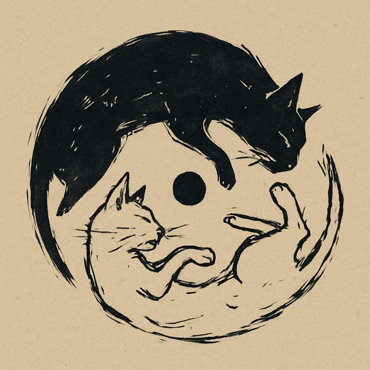
Cá estamos, mais um dia 15 de agosto, mais um ano de vida completo, mais uma prova da benção que Deus distribui para você todos os dias. Gostaria de estar próximo de você, estar presente na festa e poder vê-la transmitir sua alegria para as pessoas em torno — ainda que, a bem a verdade, não poderia esconder minha cara de frustração com as músicas que me irritariam ou com os comportamentos que causariam uma pane no meu sistema nervoso. Essa é a benção das amizades: pouco importa o quão compatíveis ou não são as pessoas por fora, você reconhece quem está ao seu lado para aquilo que mais importa.
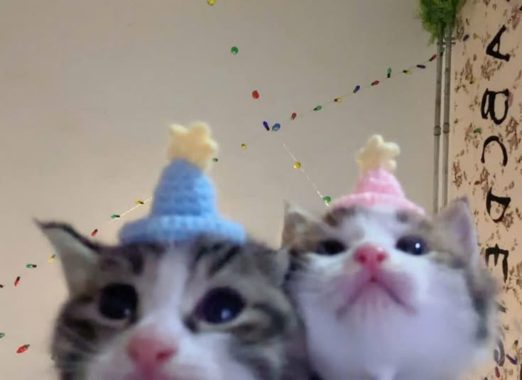
Porque isso é amizade; a companhia nas trincheiras importa mais do que a própria guerra. Quando comecei a rascunhar mentalmente essa carta, as primeiras palavras que me surgiram foram justamente as de desculpas. Vênias que são, em muitas das vezes, sem sentindo, posto que nunca deixamos nossas faltas em aberto por tanto tempo. Ainda assim, não deixo de sentir essa necessidade — talvez, só talvez, eu seja emotivo em excesso —, e cada dia mais sinto que este quê de vergonha reside em todo tipo de convívio humano.
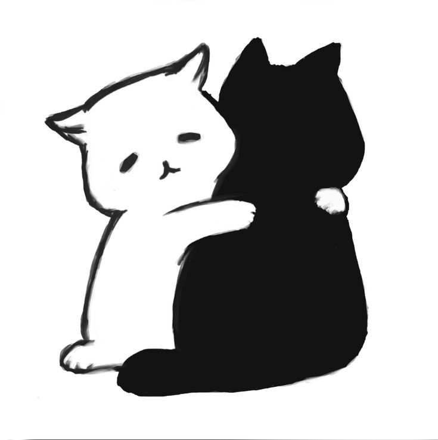
Sei que não sou alguém ideal. Você me ouviu reclamar muito, nos últimos tempos, de uma solidão, uma sensação de abandono. E, claro!, não falo que você me abandonou, porque isso seria de um ridículo sem tamanho. Na verdade acho que o oposto: estive tão acostumado a ser ouvido, depois de tantos anos (já estou na idade que posso falar décadas), que sinto ter ficado mal-acostumado. Esqueço que, neste país, pessoas como eu jamais são bem vindas, e que se elas não decidirem chutar o balde como eu, certamente serão oprimidas até morrerem completamente por dentro. E, para piorar, essas atitudes de sobrevivência trazem para mim problemas de verdade. As brincadeiras que passaram dos limites, as humilhações indesejadas e involuntárias, a incompreensão — e a lista poderia prosseguir até o fim do parágrafo, mas não vou me delongar muito mais em lamentações (prometo!). E o oposto também é verdade: o que para você é comum, muitas vezes para mim são doses sutis de veneno que só me deixam mais abatido… Já vi esse roteiro desenrolar diante dos meus olhos muitas vezes, e meu erro é ainda ter esperanças. A ideia do fantasma sem nome ainda me assombra, e muitas vezes eu me sinto só um louco sonhando sozinho… Quanto maior o desejo de grandeza de um homem, maior é o abismo dentro de seu coração, e certamente só haverá paz absoluta quando, ao dar cabo de semear todos os seus talentos em terra fértil, ele olhar para seus passos e perceber que havia conquistado tudo o que sonhara, restando apenas Deus chamá-lo para Sua casa.
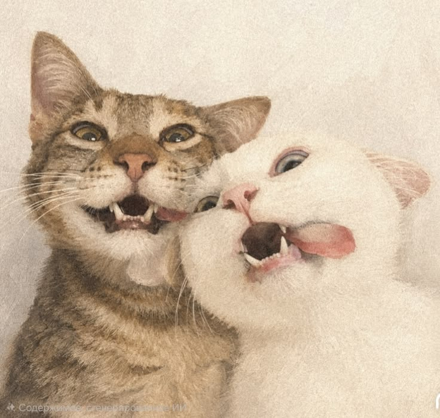
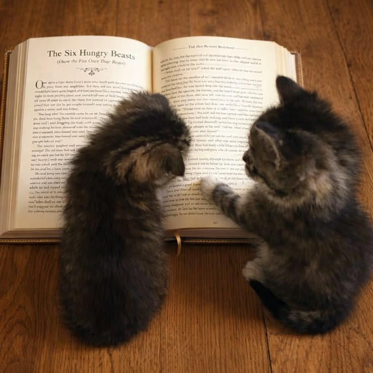
E por que falar de tudo isso, sendo que eu deveria estar aqui, enchendo seus olhos com mensagens fofas e bonitas? Primeiro, porque prezo pela honestidade. O mestre que me mostrou esse caminho mandou que eu fizesse as coisas sempre com o coração na mão, pois “um homem de mentira jamais poderá conhecer a verdade”. E, em segundo lugar, porque isso também é uma prova. Mostrei para você minhas inseguranças, abri as chaves do meu coração pela primeira vez, e poucas são as coisas que ainda escondo — algumas, por decência, outras, por drama —, e só quando a conheci que comecei a tentar, aos poucos, desinibir essa vergonha herdada de tantos anos para finalmente agir como sempre desejei agir; porque “não se pode esconder a cidade edificada sobre um monte; nem se acende uma candeia para colocá-la debaixo do alqueire, mas no velador, e alumia a todos os que se encontram na casa”.
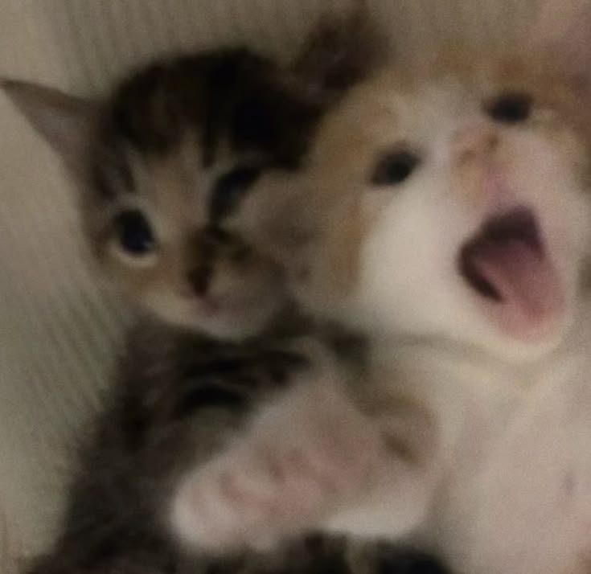
Não se sabe ainda como a reação química de nossa amizade vai explodir nesse mundo. Pode ser que você tenha dado gosto a um monstro arrogante e por demais ganancioso… (nem parece que eu abro minha carteira para o primeiro garoto de rua que aparece pedindo dinheiro, ou para qualquer vendedor que fale bonito pra mim).
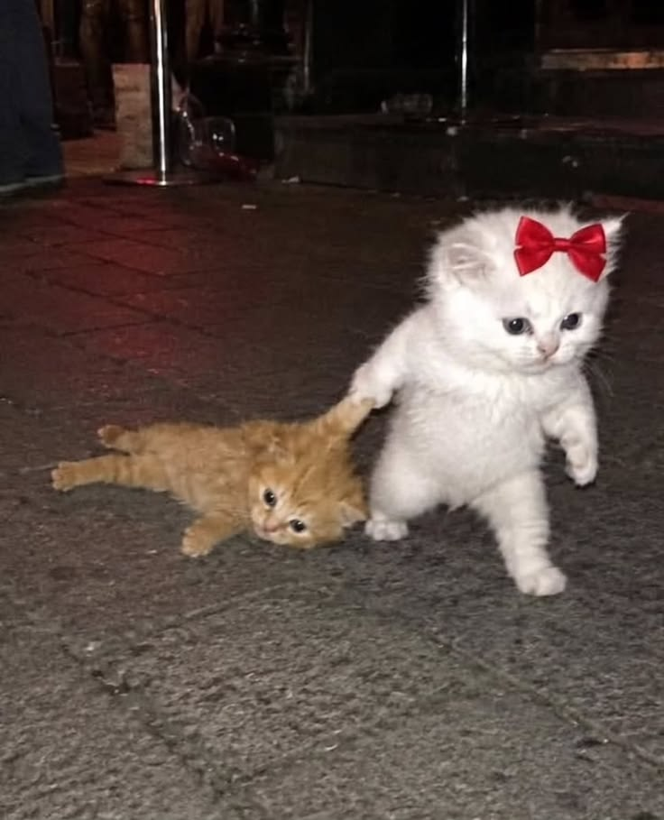
E se você foi para mim o ambiente perfeito para o florescer, meu desejo é fazê-lo em dobro por ti. Posso não ser o mais capacitado para isso, pois muitas vezes eu anseio ser o mais honrado entre o céu e a terra, e você só quer ser uma mulher humilde e realizada, feliz com sua família e amigos — e muitos gatos. Mas não seja por isso: naquilo que eu puder ajudar, ajudarei; naquilo que eu puder lutar, lutarei; e se me restar só o silêncio, permanecerei mudo como um verdadeiro monge enclausurado. Recebo com amor qualquer pedido, e não me importo de fazer qualquer sacrifício por você.
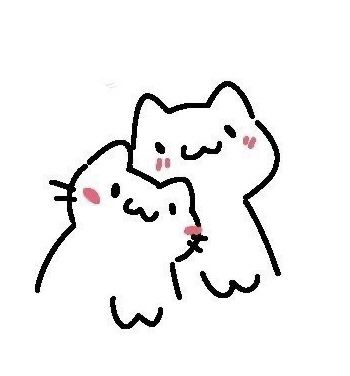
Rezo por ti, pelo Ton, pela sua família e amigos. Meu maior desejo é que, nesse mais um ano de vida, você se sinta profundamente realizada, feliz, e seguindo o caminho que mais deseja trilhar; é que você não dê voz ao medo ou a tristeza, por mais difícil que seja fazê-lo, porque o medo é o pior dos conselheiros, e porque “a felicidade atrai os anjos como a tristeza atrai os demônios”.
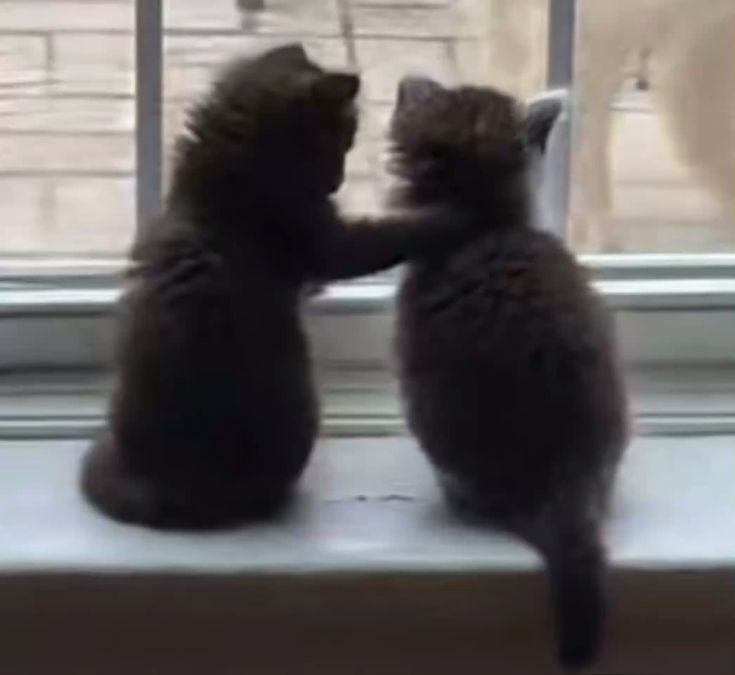
O seu destino é o sucesso, e seu sucesso é minha felicidade. Que Deus esteja sempre contigo, em todos os momentos da sua vida.
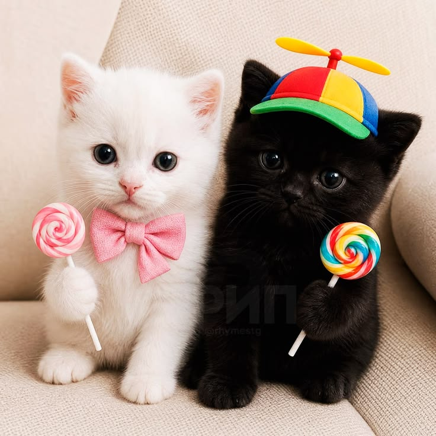
Com amor e toda sinceridade de coração

Agora, um coração.
Junte as duas mãos diante da câmera e forme um coração, como se estivesse segurando algo pequeno e importante.
❤
Feliz aniversário. Isso foi só o começo.